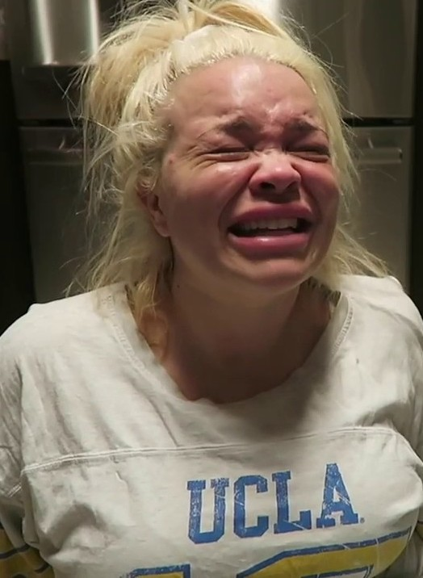
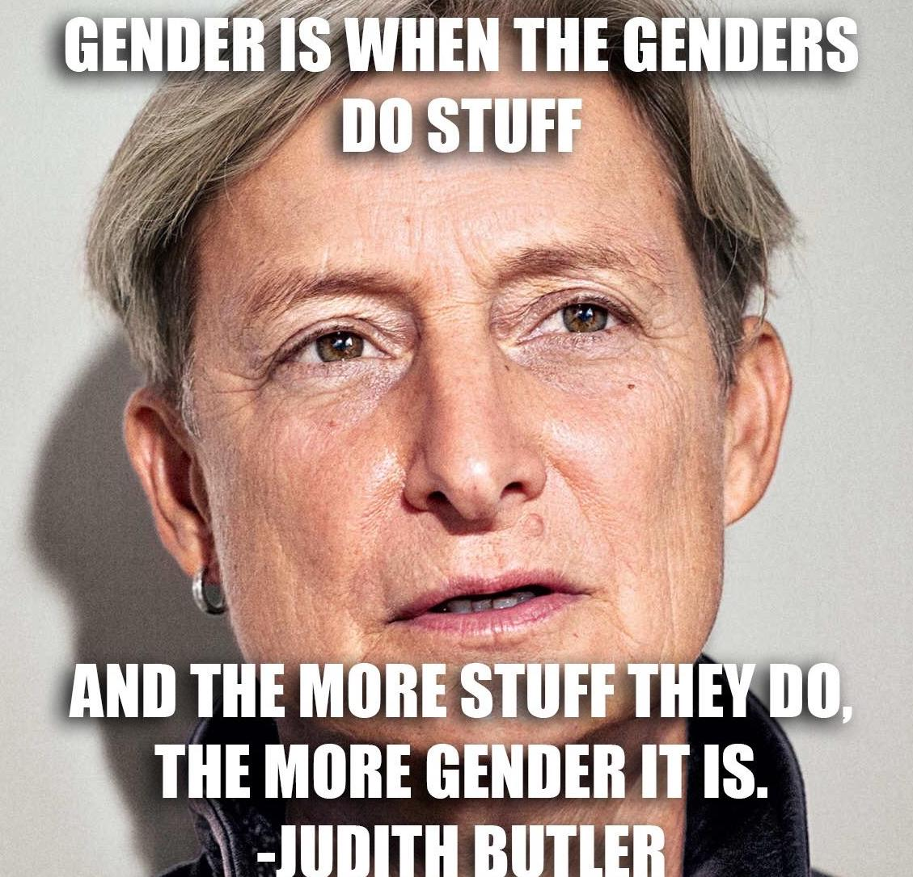
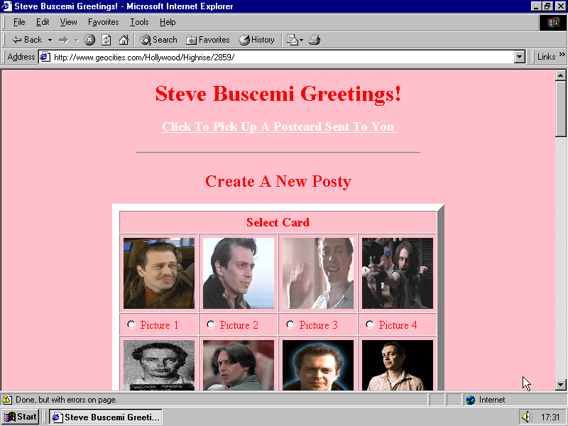
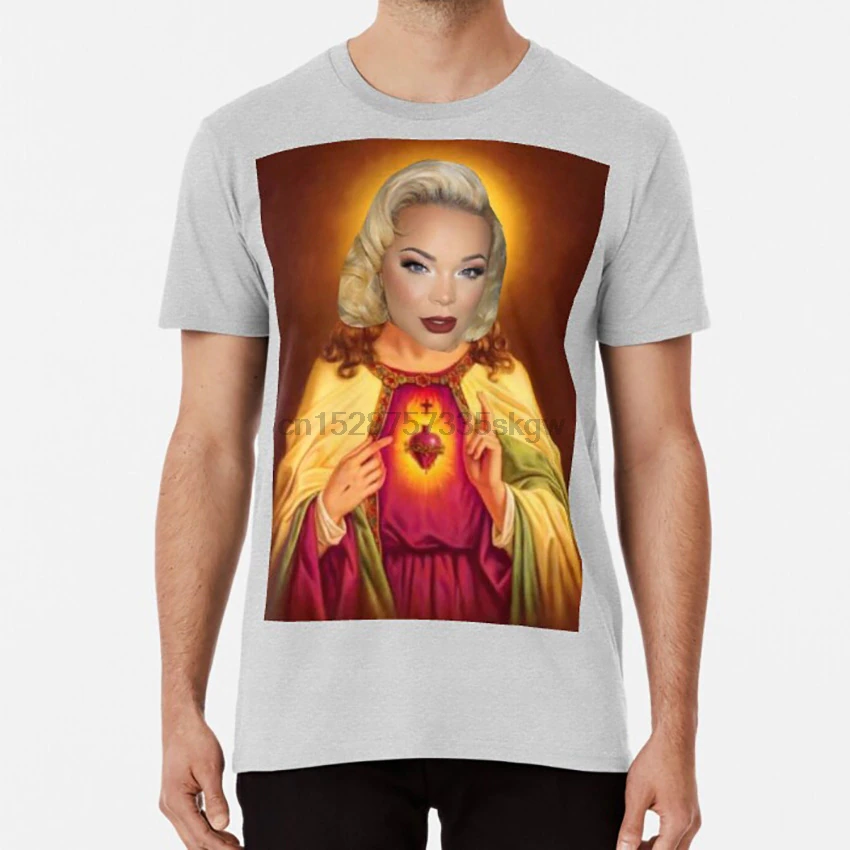

↪ creative coding
↪ early web
↪ postmodern feminism
↪ women in media
↪ paytas is an american social media icon
↪ she started her youtube channel in 2007 and has amassed millions of subscribers since that date
↪ despite numerous controversies and cancellation attempts made by others online, what makes her a standout and the reason she was selected for this project is her “uncancellable”
↪ paytas avoiding accountability through absurdity, performance, and self-victimization
↪ harming marginalized peoples through statements and actions throughout the years
↪ connections to evil white men
↪ farming 'controversy clicks' through racist, anti-semitic, problematic statements
↪ elimination of the gender binary
↪ justice for trans, non-white, working class, gender non-conforming, non-western peoples
↪ informed by judith butler, bell hooks, angela davis
↪ absurdity and late-stage capitalism
↪ subversion of traditional feminine aesthetics
↪ early web online spaces
↪ inspiration from tracy ma, elena foraker, and maya man
↪ leaving this site, users will at least have knowledge of paytas's actions
↪ ability to decide for themselves whether interacting with her content is worth it
↪ identifying patterns in narratives white women construct when avoiding accountability
↪ paytas copyright striking
